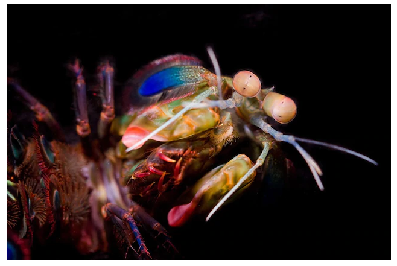
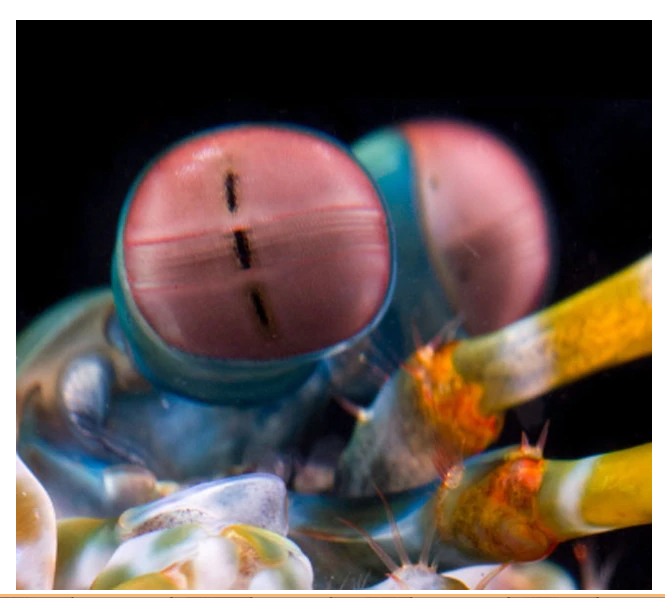

Você conhece o Stomatopoda ou Tamarutacas?
Fatos sobre o Stomatopoda
Odontodactylus scyllarus
| Classificação científica | |
|---|---|
| Reino | Animalia |
| Filo | Arthopoda |
| Subfilo | Crustacea |
| Classe | Malacostraca |
| Subclasse | Hoplocarida |
| Ordem | Stomatopoda |
Tem super-olhos
Quantas cores!
The mantis shrimp has anywhere from 12 to 16 different photoreceptors in its midband.
Reconhecem cores de um jeito único
Nem tudo são flores
They’re much worse at discriminating between colours than most other animals! They seem to use their dozen-plus receptors to recognise colours in a unique way that’s very different to other animals but oddly similar to some satellites.
